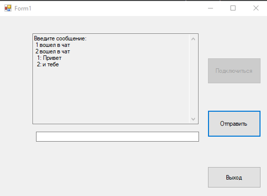
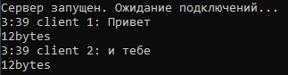
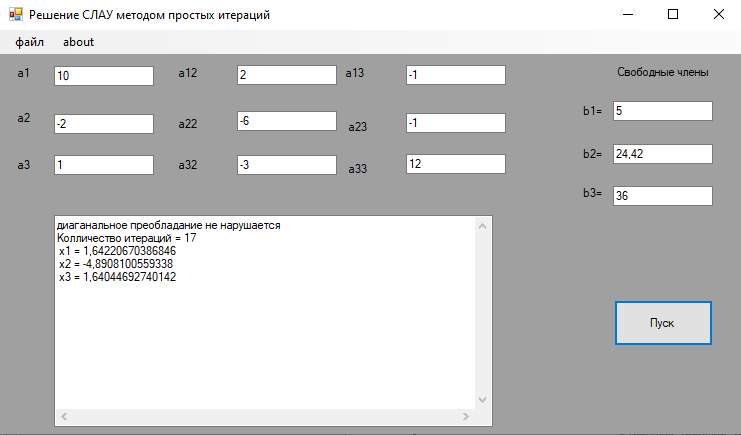

В основе межсетевых взаимодействий по протоколам TCP и UDP лежат сокеты. В .NET сокеты представлены классом System.NET.Sockets.Socket, который предоставляет низкоуровневый интерфейс для приема и отправки сообщений по сети. Прежде чем отправить запрос к какому-нибудь ресурсу, компьютер обращается к DNS-северу, чтобы по имени ресурса получить его ip-адрес. И затем уже обращается по этому ip-адресу. Все ip-адреса представляют 32-битное (протокол IPv4) или 128-битное значение (протокол IPv6), например, 31.170.165.181. Чат разделен на две программы:
Интерфейс клиента:
Интерфейс сервера:
Код программы можно найти на Github
Система линейных алгебраических уравнений (СЛАУ) — система уравнений, каждое уравнение в которой является линейным — алгебраическим уравнением первой степени. В классическом варианте коэффициенты при переменных, свободные члены и неизвестные считаются вещественными числами, но все методы и результаты сохраняются (либо естественным образом обобщаются) на случай любых полей, например, комплексных чисел. Решение систем линейных алгебраических уравнений — одна из классических задач линейной алгебры, во многом определившая её объекты и методы. Кроме того, линейные алгебраические уравнения и методы их решения играют важную роль во многих прикладных направлениях, в том числе в линейном программировании, эконометрике. Для решения СЛАУ существует более 20 различных прямых и итерационных методов. В своей работе я использую метод простых итераций. Суть метода в нахождении по приближенному значению величину следующего приближения, которое является более точным. Метод позволяет получить значения корней системы с заданной точностью в виде предела последовательности некоторых векторов (итерационный процесс). Характер сходимости и сам факт сходимости метода зависит от выбора начального приближения корня
В начале вводятся переменные, затем идет проверка на нарушение диагонального преобладания. Если оно не нарушается, идет поиск возможных иксов и сравнивается с начальным приближением, в обратном случае поиск повторяется.
Пример работы программы: 
Код программы можно найти на Github
Задача формализуется таким образом, чтобы её решение могло быть закодировано в виде вектора («генотипа») генов. Где каждый ген может быть битом, числом или неким другим объектом. В классических реализациях ГА предполагается, что генотип имеет фиксированную длину. Однако существуют вариации ГА, свободные от этого ограничения.
Некоторым, обычно случайным, образом создаётся множество генотипов начальной популяции. Они оцениваются с использованием «функции приспособленности», в результате чего с каждым генотипом ассоциируется определённое значение («приспособленность»), которое определяет насколько хорошо фенотип им описываемый решает поставленную задачу.
Из полученного множества решений («поколения») с учётом значения «приспособленности» выбираются решения (обычно лучшие особи имеют большую вероятность быть выбранными), к которым применяются «генетические операторы» (в большинстве случаев «скрещивание» — crossover и «мутация» — mutation), результатом чего является получение новых решений. Для них также вычисляется значение приспособленности, и затем производится отбор («селекция») лучших решений в следующее поколение.
Этот набор действий повторяется итеративно, так моделируется «эволюционный процесс», продолжающийся несколько жизненных циклов (поколений), пока не будет выполнен критерий остановки алгоритма. Таким критерием может быть:
Генетические алгоритмы служат, главным образом, для поиска решений в многомерных пространствах поиска.
Таким образом, можно выделить следующие этапы генетического алгоритма:
Код программы можно найти на Github
Пусть требования множества N = {1, 2, ..., n} обслуживается одним прибором. Каждое требование i характеризуется моментом поступления di, длительностью обслуживания ti , директивным сроком Di , функцией штрафа , коэффициентом штрафа fi за каждый такт нарушения чего-либо.
В каждый момент времени прибор обслуживает не более одного требования. Порядок обслуживания требований произвольный. Прерывания в обслуживании каждого отдельного требования не допускаются.
Исходные параметры:
Варьируемые параметры :
Ограничения:
Для решения задачи нужны ограничения и критерий ф1= max|d_i-x_i |→ min – минимизация временного смещения относительно начальных сроков. Решение задачи упорядочения однозначно задается перестановкой n чисел, соответствующих порядку включения работ в расписание.
Программа реализована на языке С. Среда разработки Visual studio 2019 Программа позволяет получить решение задачи Полным перебором посчитает перестановки размерностью 11 символов и меньше Метод восхождения на холм размерность задачи большей чем полным перебором
Код программы можно найти на